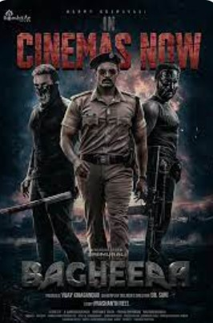

- 8 Vasantalu
- Sita Ramam
- Bagheera 

After losing her army father, writer/martial artist Shuddhi grows up in Ooty with her mother.
She channels grief through writing, then experiences love and heartbreak with Varun, leading to personal transformation

Upon returning to Pakistan, Afreen sets off to fulfil her grandfather's wish of delivering a letter from Ram to Sita.
Along the way, she finds Ram and learns about their love story
Vedanth, an honest cop turned vigilante, who fights against a corrupt system and organ trafficking mafia.
Fueled by betrayal and guided by justice, he becomes the masked savior the city needs.